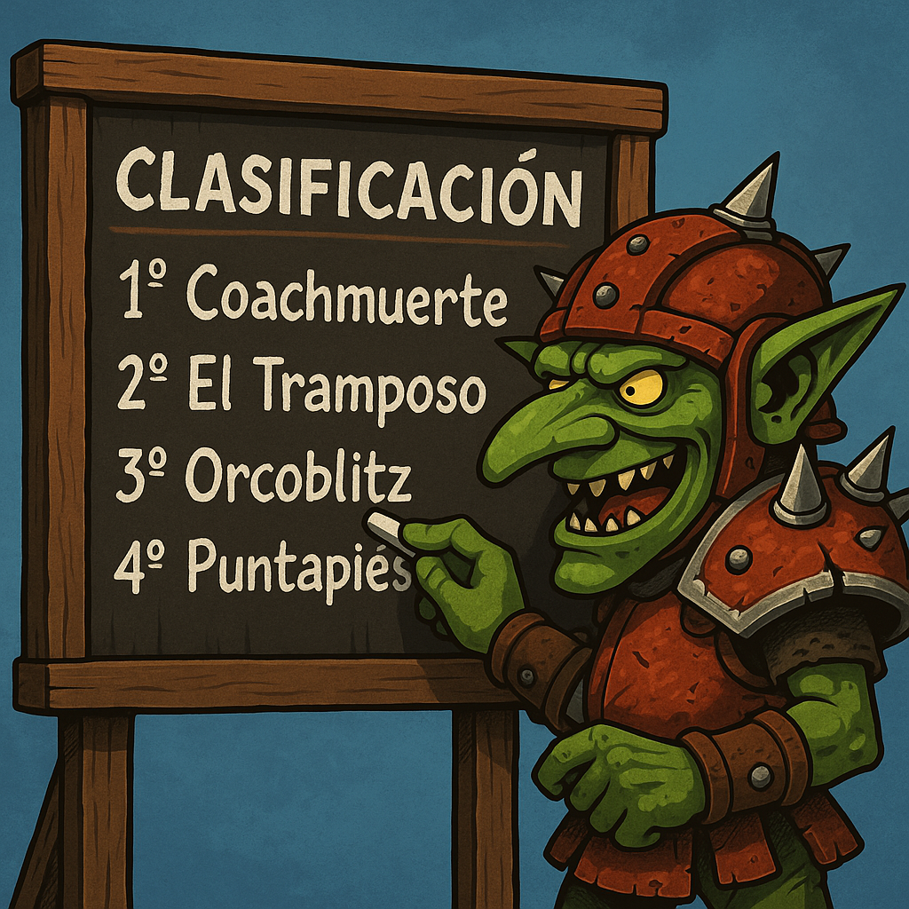

¿CÓMO FUNCIONA BLOOD BOWL RANKING?
Blood Bowl Ranking nace con el objetivo de compartir diferentes clasificaciones ELO de los jugadores tanto españoles como de todo el mundo, tanto en los resultados de los partidos NAF como de los partidos de BBT (BBTournaments).
Se puede encontrar las clasificaciones divididas en dos grupos: NAF España, NAF Mundial y BBT. Las dos primeras englobarán todos los torneos registrados en la NAF, la tercera todos los torneos registrados en BBT.
A su vez, los grupos de la NAF estarán dividido en NAF España donde estarán filtrado solo los jugadores españoles, y NAF Mundial con todos los jugadores NAF del mundo. A su vez estarán divididas en tres clasificaciones distintas: un ranking global, donde el ELO evoluciona a lo largo de la historia y no se resetea nunca y no está separado por razas, un ranking anual, donde el ELO evoluciona a lo largo de un año natural y se resetea a 150 cada 1 de enero y no está separado por razas, y el clásico ranking global por razas, donde el ELO evoluciona a lo largo de la historia y no se resetea nunca y está separado por razas.
En el caso del grupo del BBT estará dividido en dos clasificaciones distintas: un ranking global y un ranking anual.
Cada página del ranking encontrarás en la clasificación tanto la posición general de la clasificación, el número NAF, el nick de entrenador, la Comunidad Autónoma de ese entrenador, o el PaÃs en el caso de los rankings de NAF Mundial, y entre paréntesis la posición en la clasificación entre los jugadores de esas Comunidad Autónoma/PaÃs, el número de torneos y partidos jugados, las victorias, empates y derrotas, el win ratio y el ranking de dicha clasificación.
La Comunidad Autónoma de cada jugador se irá rellenando poco a poco según se vaya indicando puesto que no hay ningún lugar dónde consultar dicho dato, en caso de no tener el dato aparecerá como "Apatrida", si deseas indicar cuál es tu Comunidad Autónoma o el de algún otro entrenador o corregir algún error que detectes, puedes ponerte en contacto a través del formulario de contacto.
¿QUÉ FILTROS HAY?
Las clasificaciones incluyen solo los jugadores que han indicado en la web de la NAF que son españoles y en los rankings de NAF Mundial con los entrenadores de todo el mundo. Posteriormente se puede filtrar por tramos de Win Ratio, por número NAF, por nick, Comunidad Autónoma o PaÃs. Entre paréntesis aparece la clasificación entre los jugadores con la misma CCAA/PaÃs. En caso de no tener datos de la CCAA del jugador, aparecerá como Apátrida.
Si estás en el listado como Apátrida y quieres indicar cuál es tu CCAA, ponte en contacto.
Además, cada clasificación se puede ordenar por sus diferentes columnas.
¿QUÉ OTROS RANKINGS HAY?
Además de las clasificaciones ELO podrás encontrar otros ranking con datos interesantes de los partidos. Puedes encontrar un ranking de rachas, otro de partidos contra proplayers, contra top proplayers y contra mega proplayers.
¿CÓMO FUNCIONAN LAS RACHAS?
En las rachas podrás encontrar seis valores: partidos ganados (victorias), partidos sin perder, partidos perdidos (derrotas), partidos con 1 TD o más, partidos con 2 TD o más, partidos sin recibir TD.
De cada una de estos valores encontrarás dos columnas. Una con la racha actual hasta el último partido registrado, y otra con la mejor racha que se haya hecho el entrenador históricamente.
¿CÓMO FUNCIONA EL RANKING CONTRA PROPLAYERS (Y TOP Y MEGA)?
En los rankings contra Proplayers, Top Proplayers y Mega Proplayers, podrás encontrar la cantidad de partidos, asà como las victorias, empates, derrotas y el Win Ratio contra ese tipo de jugadores.
¿QUIÉN SE CONSIDERA UN PROPLAYER, TOP PROPLAYER Y MEGA PROPLAYERS?
Se considera que has jugado contra un jugador Proplayer, cuando ese jugador tiene un ranking entre 180 y 199.99 con esa raza, o tiene al menos cinco razas con ranking entre 200 y 209.99.
Se considera que has jugado contra un jugador Top Proplayer, cuando ese jugador tiene un ranking entre 200 y 219.99 con esa raza, o tiene al menos cinco razas con ranking entre 210 y 219.99.
Se considera que has jugado contra un jugador Mega Proplayer, cuando ese jugador tiene un ranking 220 o más con esa raza, o tiene al menos cinco razas con ranking de 220 ó más.
En el caso de estos rankings para el BBT no se tendrán en cuenta las razas sino el ranking global.
¿CADA CUÃNTO SE ACTUALIZA?
Las clasificaciones no tienen un periodo regular de actualización, pero se intentará que se actualice de manera constante y sin periodos muy extensos entre una actualización y otra.
